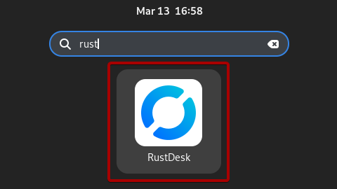
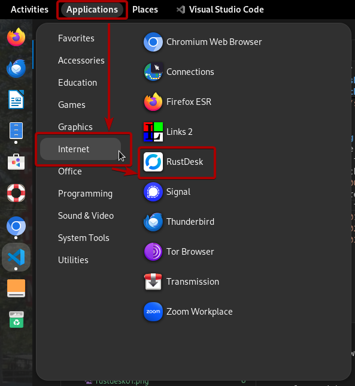
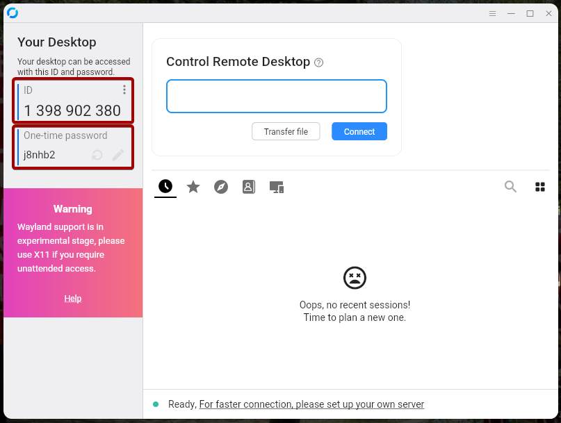
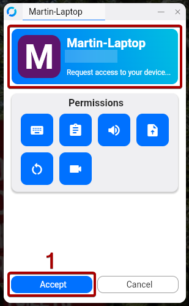
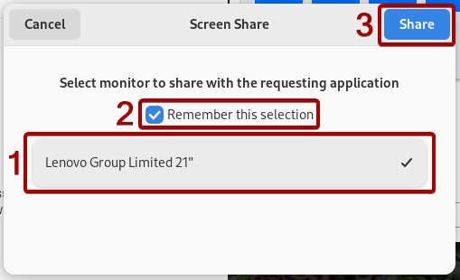
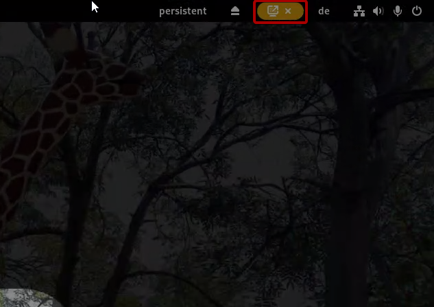
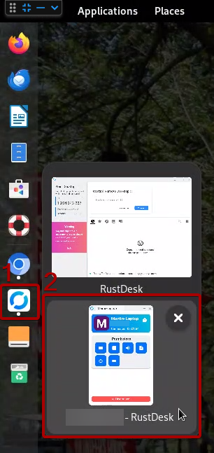
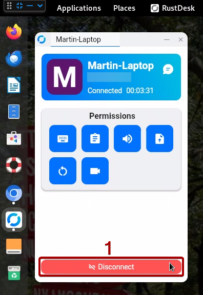
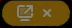

Documentazione per utenti avanzati di IKSDP Desktop Linux
Creare una chiavetta USB per un utente
TODO
Aggiornare il sistema operativo
TODO
mount -t nfs 192.168.200.1:/usb2-part1 /mnt
dd if=/mnt/smb/debian-live* of=/dev/nvme0n1 status=progress
Supporto tramite Sessione Remota con Rustdesk
Avviare una Sessione Remota
- Apri l'applicazione "Rustdesk" premendo il tasto "Windows" e iniziando a digitare "Rustdesk".
- Ora fai clic sull'icona "Rustdesk".
 - Un altro modo per avviare Rustdesk è aprire la scheda Applicazioni nella barra delle applicazioni in alto e poi fare clic su "Internet" e "Rustdesk".
 - Ora invia il tuo "ID" e la tua "One-time Password", che puoi vedere sulla sinistra, alla persona da cui vuoi ricevere supporto.
 - Potrebbe apparire una piccola finestra che indica che un dispositivo vuole connettersi al tuo computer. Normalmente la connessione viene stabilita automaticamente. Se ciò non accade, fai clic sul pulsante "Accept".
 - Se è la prima volta che qualcuno si connette al tuo computer, dovrai selezionare lo schermo da condividere. Seleziona lo schermo, spunta la casella "Remember this selection" e poi fai clic su "Share".
 - Se vedi questa piccola icona nella barra delle applicazioni in alto, significa che la connessione è attiva.

Terminare la Sessione Remota
- Sposta il mouse sopra l'icona "Rustdesk" nella barra laterale sinistra. Ora dovrebbero apparire due piccole finestre accanto alla barra laterale.
- Fai clic sulla finestra che mostra la connessione attiva.
 - Ora dovrebbe apparire sullo schermo la finestra "Connessione".
- Fai clic su "Disconnect" per terminare la sessione remota.
 - La piccola icona nella barra delle applicazioni in alto  dovrebbe ora scomparire, il che significa che la connessione è stata chiusa per il dispositivo remoto.